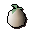
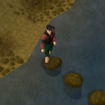

")
Transportation - Introduction
Introduction
RuneScape is a forever expanding world, so, it is quite likely that during your travels you've already come across the problem of wanting to navigate great distances in the shortest amount of time.
This guide lists the many ways you can travel throughout RuneScape while saving valuable time by avoiding excessively long walks.
Travelling on Foot

The higher the level of Agility you have, the faster your energy will recover, effectively letting you run for longer. Players with very high levels of Agility will find that they can move reasonably quickly around the world of RuneScape. This effect is in place on member and non-member servers.
The more weight you carry, the faster your energy will be drained while running. Thus, light weight gear such as robes and the Boots of Lightness are recommended attire if you are planning on running long distances.
Members may also restore their energy by these methods:
Item Name |
Item Image |
Effect |
| Sq'irk juice (From the Sorceress's Garden) |
![[image]](../../img/main/kbase/minigames/sorceress/summerjuice.gif) |
Restores 10-40% energy, depending on type of juice |
| White tree fruit (Available from the 'White Tree' on completion of the Garden of Tranquillity Quest) |
 | Restores 16% energy |
| Energy restore potion | ![[image]](../../img/main/kbase/items/potions/other_potions/energy_pot.gif) |
Restores 20% of run energy per dose |
| Summer pie | ![[image]](../../img/main/kbase/items/food/baked/summer_pie.gif) |
Restores 20% energy +5 to Agility |
| Super energy restore potion | ![[image]](../../img/main/kbase/items/potions/other_potions/superenergy_pot.gif) |
Restores 40% of run energy per dose |
| Explorer's Ring
(Obtained from the Lumbridge / Draynor Achievement Diary) |
![[image]](../../img/main/kbase/diary/explorer_s_ring.gif) |
Restores 50% of your run energy a number of times per day (depending on the level of the ring) |
| Strange fruit (Obtained from Random Event 'Strange Plant') |
![[image]](../../img/main/kbase/items/offspring/macro_fruit.gif) |
Restores 60% energy |
| Goutweed tuber (Obtained from Tai Bwo Wannai Cleanup) |
![[image]](../../img/main/kbase/items/seeds/goutweed.gif) |
Restores 100% energy |
| Mint cake
(Obtained from Gnome Restaurant) |
![[image]](../../img/main/kbase/minigames/gnomecooking/mint_cake.gif) |
Restores 100% energy |
| Spirit terrorbird, Tireless Run special move | ![[image]](../../img/main/kbase/skills/summoning/scrolls/tireless_run.gif) |
Restores a portion of your run energy based on your Agility level |
| Salt water spring, Oo'glog (Unlocked during As a First Resort...) |
n/a | Restores run energy and stops it from depleting for a short period of time |
For more information about the Agility skill, please refer to the skill guide in our Manual.
Shortcuts - (Members Only)

You will find such shortcuts spread throughout the world, with their details found in the Agility skill guide. The in-game skill guide also lists the shortcuts only accessible at specific Agility levels, for ease of reference during play.

More articles in
Transportation
|
|
|
Further Help
If this article does not help you, you may find the following sections of the RuneScape site helpful:
|
|